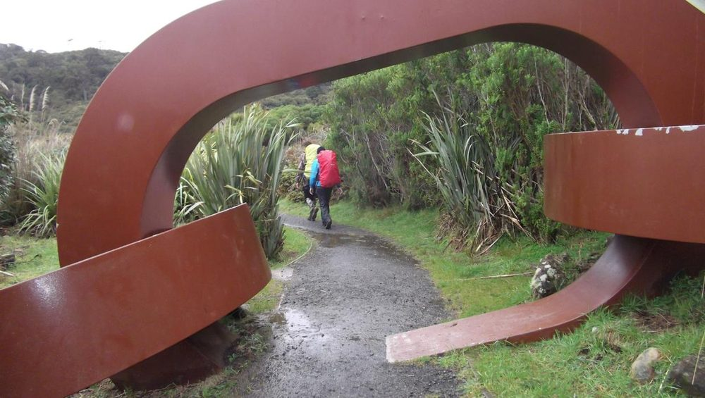
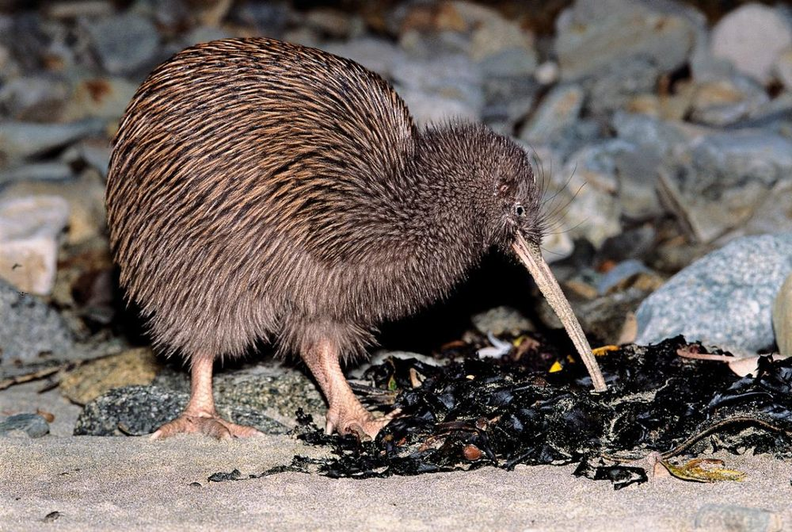
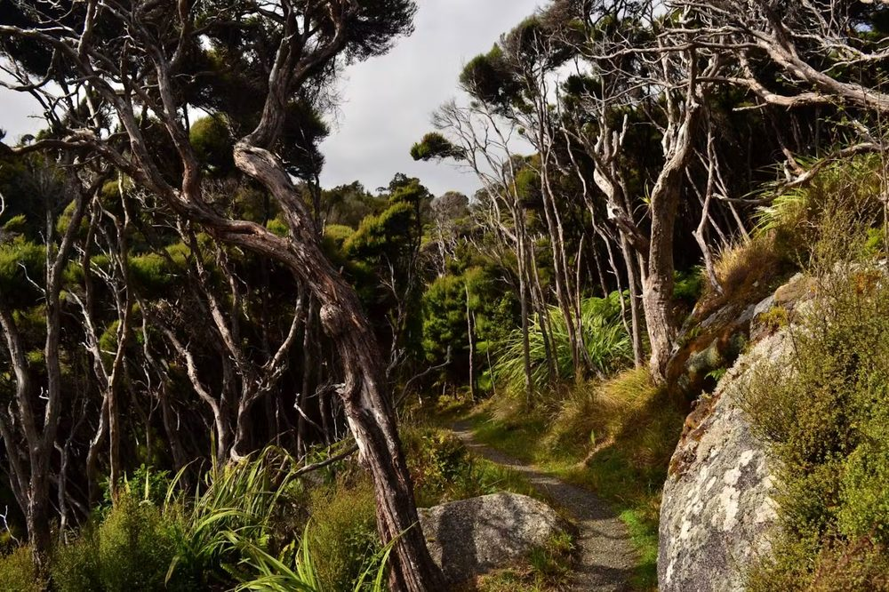

Nature and conservation: Rakiura National Park
Read about nature in Rakiura National Park.

Comprised of granite rocks, the island has three main peaks, the highest being Hananui, Mt Anglem, at 980 metres, in the north. On the western side, Mason Bay's sprawling, soaring dunes form an impressive landform and towards the centre are the expansive Freshwater wetlands. The jagged skyline of the Ruggedy Mountains of the north-west corner contrast with the smooth outline of Hananui.
Rakiura Stewart Island is remarkable for its almost complete cover of natural vegetation, from the sea to cloudy, windswept summits. Sea-pounded cliffs and sandy beaches make up the western coast of the island while on the eastern side there are three sheltered inlets; Paterson Inlet, Port Adventure and Port Pegasus.
Flora

The northern half of Rakiura is covered by podocarp and hardwood forest, featuring New Zealand's southernmost tall trees - rimu, kahikatea and tōtara.
The remaining areas of the island feature shrub land or low forest, grassland, wetland, areas of alpine herbs, cushion plants, and coastal or dune communities.
Fauna
The birdlife of Rakiura is relatively rich compared with the mainland of Aotearoa New Zealand. Native birds that may be seen include parakeet/kākāriki, native wood pigeon/kererū, tūī, bellbird/korimako, tomtit/miromiro, weka, robin/kakaruai, and fernbird/mātā, as well as a significant population of South Island kākā.
Stewart Island is home to several other bird species of international significance. These include the New Zealand Dotterel; the kakapo, now transferred to Codfish Island and other predator-free sanctuary islands; Cook's petrel which also breeds on Codfish Island; the Stewart Island kiwi/tokoeka; and the South Island saddleback, confined to several small offshore islands, including Ulva Island.
Kiwi

The island's kiwi population is also special. Known now as southern tokoeka, the Rakiura kiwi behave rather differently to kiwi in other parts of New Zealand. They maintain family groups, for example, and some birds feed during daylight hours. Rakiura offers perhaps the best opportunity anywhere in New Zealand for viewing kiwi in the wild.
Kākāpō
The island was the final stronghold for the flightless, nocturnal parrot/kākāpō, which had all but disappeared from the mainland under pressure from stoats and other predators leaving fewer than a hundred birds in Fiordland and Rakiura. The last 60 or so birds were relocated to nearby Whenua Hou or Codfish Island which is now a nature reserve supporting kākāpō and other endangered species.
Freshwater wetland

Freshwater River wetland comprises a mosaic of acid bog, pools, wire rush peat-lands, mānuka shrub, red tussock areas and patches of podocarp forest that extend for some 23 km along the Freshwater Valley to the intertidal mudflats at the river mouth.
The Freshwater area is a significant wetland which supports a range of birdlife, including Stewart Island robins/toutouwai and Stewart Island fernbirds/mātā, and there is a good possibility of even seeing kiwi in daylight. Of particular note is the absence of any introduced fish in the Freshwater River.
Pests
White-tailed and red deer, cats, and rats were introduced in the early 1900s. Possums were also introduced, but, unlike the mainland, no stoats or other mustelids were ever brought here. In some coastal areas the forest has been modified drastically by the browsing of introduced animals.
Department of Conservation. (2016, Feb 19). Nature and conservation: Rakiura National Park. https://www.doc.govt.nz/parks-and-recreation/places-to-go/southland/places/stewart-island-rakiura/rakiura-national-park/nature-and-history/